In this article (and accompanying video), you will create and run your first executable SpiffWorkflow diagram. We’ll be using a brand new open source application called SpiffArena that wraps the SpiffWorkflow library in an easier-to-use interface that provides a host of important tools. Let’s get started and you can see for yourself…
Video Instructions
You can follow the directions below, or you can watch this 10-minute video and follow along.
Install and Start SpiffArena
Prerequisites:
You will need to install Docker and Docker-Compose. Please follow the Docker Installation instructions if you do not have these already. Docker is a way for you to run on your laptop what was designed to run on larger computers and be accessible to many people throughout an organization. It will not alter your computer, and you can fully remove all the files with a few commands provided at the end of this article.
Downloading and Starting SpiffArena
From MacOS, Linux Command Line, or Windows Powershell, run the following commands:
mkdir spiffworkflow
cd spiffworkflow
wget https://raw.githubusercontent.com/sartography/spiff-arena/main/docker-compose.yml
docker-compose pull
docker-compose up -dPlease note that it may take a few minutes to download and install the Docker images. Nothing permanent is happening here. You can delete these images at any time using the Docker Desktop application. It’s also worth noting that subsequent starts are much faster.
Macs: Please note that you may need to use curl rather than wget
curl -o docker-compose.yml https://raw.githubusercontent.com/sartography/spiff-arena/main/docker-compose.ymlOpen SpiffArena in a browser
After a few minutes, all processes should be up and running, and you can view the system through your web browser.
- Visit http://localhost:8001 in your browser.
- Log in as admin/admin
Congratulations! You have SpiffWorkflow up and running locally! Now what!? Let’s start with a simple example.
Building and running your first Workflow Process
Let’s build and run a very simple workflow to get familiar with the interface, and then we will follow up with larger and more complex examples.
Select “Processes” from the Main Menu
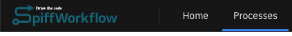
Select “Add a process group”
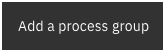
Provide the following information:
- Display Name: “Playground” The identifier will automatically be set to “playground”. We will cover other fields and options at another time.
- Description: “These are my test processes.”
- Click “Submit”
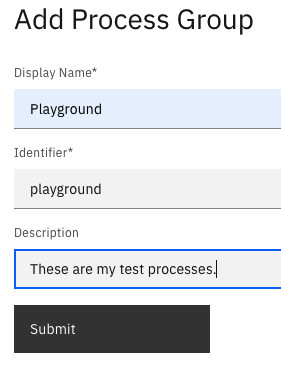
Select “Add a process model” (the second button)
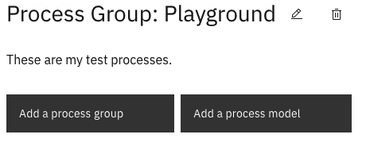
Provide the following information:
- Display Name: “Simple Example”
- The identifier will automatically be set to “simple-example”. We will cover other fields and options at another time.
- Description: “My first SpiffWorkflow Process Model”
- Click “Submit”
- Click “New BPMN File”
Welcome to the Diagram Editor!
Let’s draw a simple functional BPMN Diagram.
Every new BPMN diagram is initially populated with a Start Event, which looks like an open circle. Click on it and it will show a blue outline and a “context menu” – find the “Task” icon in the menu (the rectangle with rounded corners) and click it to “Append Task”.
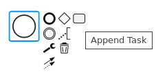
Your diagram should now look like this:
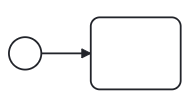
Now let’s turn the “Task” (the rectangle) into a Script Task, and we will add a bit of Python code to our diagram.
Click the Task to get the context menu up again.
Click the wrench icon  , and select
, and select  “Script Task” from the list of options.
“Script Task” from the list of options.
At this point, your cursor will be blinking inside of the Task icon, allowing you to enter the name of the Task. For this time, we will use an alternative method, described in the next step. Click anywhere off the Task and your diagram should now look like this:
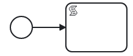
Select the Script Task (the rectangle should have a blue outline around it) and then take a look at the options in the Properties Panel on the right. You should see something like the image below. There are three sections. When you click on a section it will expand.
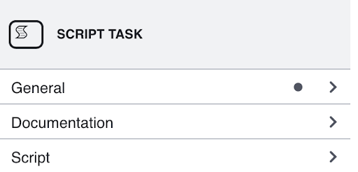
Click General so it is expanded, we can give the Task a name. Let’s call it “Set Name”. Your diagram should now look like this:
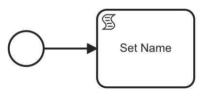
For this exercise, we’ll need two Tasks, so similar to how you added the first Task after the Start Event, click on the Script Task you just added, and append a second task,
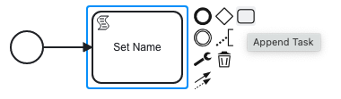
so the diagram looks like this:
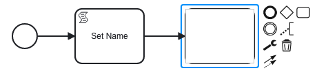
Take advantage of the blinking cursor in the middle of the newly added Task and name it “Display Message”. Next, click on the wrench icon and select “Manual Task”. And to complete the diagram, click on the bolded circle at the top left, it should say “Append EndEvent” as shown below.
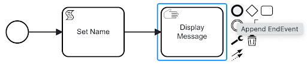
Your diagram should now look like this:
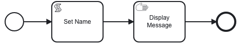
Now let’s add a bit of Python code to execute. Click in the Script Task and expand the “Script” Section and click the “Launch Editor” button – which will bring up a Python editor. Paste in the following code, and click the Close Button.
|
|
Now, in the second task, let’s add some text and Jinja code to display a message. Click on the Manual Task and in the Property Panel on the right side, expand the Instructions section and add the following:
Hello {{my_name}}!
--------------------------
Welcome to SpiffWorkflow!The right-hand Property Panel should look like this (you may need to grab the bottom left of the Instruction box and drag it down to see everything you pasted in there).
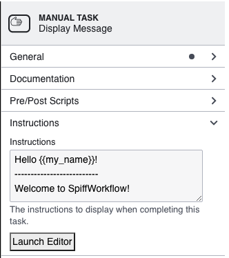
Save the diagram using the save button in the upper left. When it asks for a name call it “hello_world”.
Now click on the “Simple Example” in the breadcrumbs at the top of the page to go back to the process model.
Click the Start button, and you should be greeted with your “Hello World!” message:
Click the Continue button to return to the Home page and then the Completed tab to see your first completed process instance!
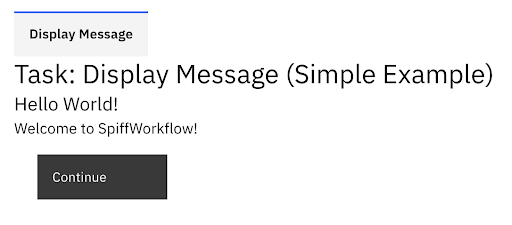
Shutting it all down
$ docker-compose down
$ docker psWhat you have learned
Today you learned a great deal about SpiffWorkflow and the new SpiffArena application, but it’s just the tip of the iceberg. Here are a few things we covered today:
- How to get SpiffArena running locally on your computer. You can stop it using the Docker Desktop application, or by running docker container down at the command line.
- How to create a new Process Model
- How to create a simple executable BPMN diagram
- How to add start events, tasks, and end events to a diagram.
- How to create a Script Task that contains a bit of Python.
- How to create a Manual Task with a message that people can see.
Remember that the real power of SpiffWorkflow is its ability to help create transparency around complex rules of a business, government agency, or any other organization. This isn’t just some quick and easy way to write code. It is a tool for building consensus and for offering a guarantee that what you see is truly what you get. Additional tutorials will cover some of the powerful ways that SpiffWorkflow helps you create transparency by using seemingly simple diagrams to describe complex processes, critical decision points, and to coordinate parallel actions and the handoff of responsibility from one person or application to the next – all in a way everyone can see and understand.
Don’t let this simple tutorial fool you. There is some substantial power within your reach to create change and improve the world in which you live. We post tutorials frequently to help you explore this power and understand how others are using SpiffWorkflow to transform their organizations and incorporate more people in the software development life cycle.